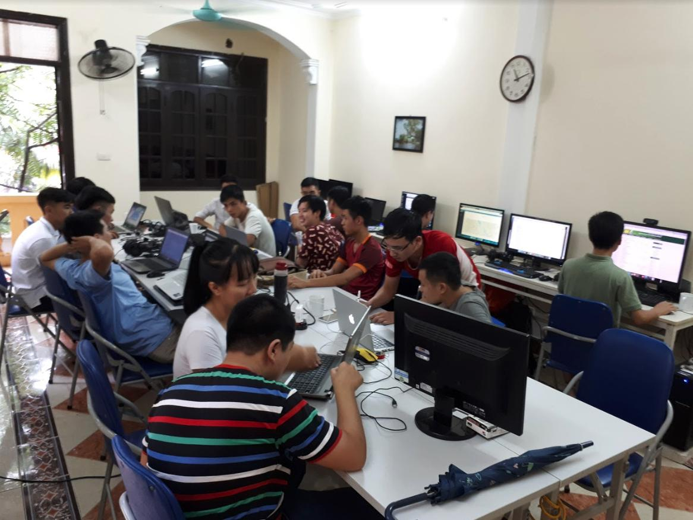

<html>
<head>
	<meta charset="utf-8" />
	
	<style>
		h1 {
			font-size: 25px;
		}
		mark {
			background-color: #ff55;
			color: red;
		}
		.color-red {
			color: blue;
		}	
	</style>

	<body>
		<h1>
			Sẵn sàng chuyển lớp học offline sang online nếu dịch cúm lan rộng
		</h1>

		<p class="color-red" id="color-blue"> <i>31 tháng 01, 2020</i></p>

		<p>Chào các thầy cô giảng viên và các bạn sinh viên thân mến</p>

		<p><mark>3/2/2020 Techmaster vẫn mở những lớp học như bình thường</mark>. Tuy nhiên nếu dịch cúm lây lan mạnh ở Hà nội, Techmaster có thể cho các lớp học offline chuyển qua học online tương tác 2 chiều.</p>
		
		<p><h3><strong>
			Ngay từ hôm 31/01/2020, tất cả các giảng viên cần chuẩn bị bài giảng trực tuyến gồm có:<br /></strong></h3>
		<ol>
			<li>PowerPoint slide tóm tắt lý thuyết</li>
			<li>Hand On Lab hướng dẫn thực hành từng bước</li>
			<li>Quiz trắc nghiệm kiến thức</li>
			<li>Mã nguồn ví dụ chia sẻ trên github</li>
		</ol>
		</p>

		<p>
			Giảng viên và sinh viên sau khi đồng thuận chuyển một số buổi học offline sang online. Giảng viên sẽ đăng ký với số buổi cụ thể và báo cáo tiến độ lớp học, mục tiêu kiến thức tối thiểu sinh viên phải đạt được, báo cáo cập nhật vào Google Sheet, có nhận xét tiến độ, kết quả của từng sinh viên. Những lớp sinh viên không đồng ý học trực tuyến, giảng viên và sinh viên tự thống nhất lịch học.<br />

			Sau khi lớp học offline được nối lại bình thường, sinh viên sẽ phải tham dự kỳ kiểm tra năng lực. Techmaster trả thù lao buổi học trực tuyến có đầy đủ bài giảng như buổi học offline.<br />

			Những lớp học sau đây giảng viên cần chuẩn bị khoá học trực tuyến:<br />

			<ol>
				<li>Lập trình IOS Swift, cô Tào Thuý Quỳnh</li>
				<li>Python căn bản - phân tích dữ liệu - thầy Lê Quang</li>
				<li>java căn bản - nâng cao - thầy Đào Văn Đức</li>
				<li>Angular, React.js - thầy Đặng Quang Huy</li>
				<li>IOT ThingsBoard - thầy Lê Văn Dũng</li>
				<li>Flutter - thầy Trịnh Minh Cường</li>
				<li>SQL / Postgresql - thầy Nguyễn Văn Duy</li>
				<li>WordPress - thầy Lê Chí Linh</li>
				<li>Spring Boot Web - cô Trịnh Minh Thuý</li>
			</ol>
			
		</p>
	</body>
</html> 